How to Stop a Wedding
Two Methods:
Before the Wedding
At the Wedding
We've all seen the movies where a person halts a wedding in progress in order to get back the one they truly love. In reality though, halting a wedding from going ahead - for any reason - is a very delicate situation that can easily backfire on you and spoil a significant day. If you believe you're justified in doing so, however, here are some suggestions for going about stopping a wedding with class and dignity.
Method 1 of 2: Before the Wedding
- 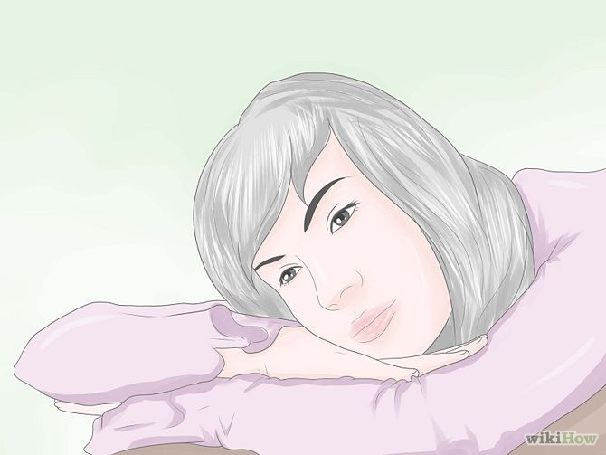Think about why you want to break up the wedding. Ask yourself if it's worth it.Don't just think about yourself in this equation. Be honest about your belief that your beloved is not happy with the person he or she is about to marry. It is possible, after all, that they have made this choice after a great deal of soul-searching, based on their own wants, needs, and preferences. Sometimes a person will prefer a pragmatic, realistic, and reliable love choice over a deep love that they feel isn't going to fulfill specific needs in their life.If you have reason to stop a wedding and it's not in order to be with either the bride or groom romantically, make sure your view of the bride and groom is fair and justified. It can be incredibly hard, if not impossible, to really get an accurate picture of a relationship from the outside. You may object for some reason to the pairing, but ask yourself: does your view trump their happiness? Try to see the future from their perspectives.Talk this out with several others before you act. The human mind works in strange ways. Sometimes what we think in our own mind is a brilliant idea at the time might just turn out to be crazy. We all have false memories - the recollection of an event, or the details of an event, that did not occur.
-
 Try to deal with your concerns in private. Before considering anything as dramatic as stopping a wedding in progress, try to contact your beloved prior to the wedding day so you two can have a private moment together. Stopping a wedding is an act that will have serious consequences for many people: you, the bride and groom, their families and the other guests.
Try to deal with your concerns in private. Before considering anything as dramatic as stopping a wedding in progress, try to contact your beloved prior to the wedding day so you two can have a private moment together. Stopping a wedding is an act that will have serious consequences for many people: you, the bride and groom, their families and the other guests. - 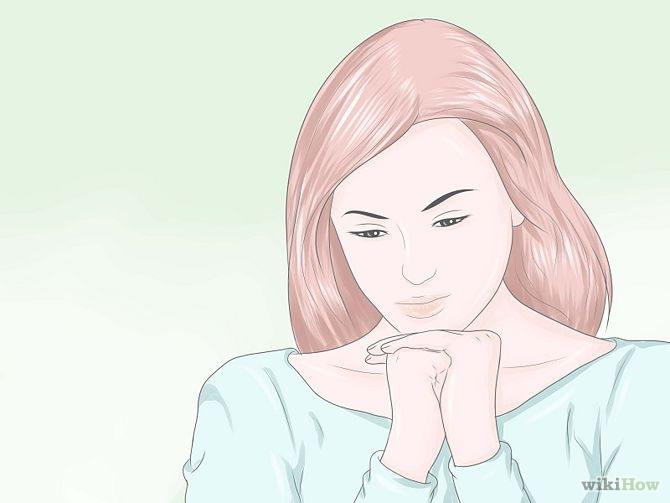Make sure you truly feel as if halting the wedding is your only option.You most likely have a history with the person about to tie the knot, and you must be certain that your odds of winning him or her back are favorable and desirable. If you're stopping the wedding for non-romantic reasons, again take a moment to question your motives, the goal, and whether such an action would truly benefit those most closely involved.
- 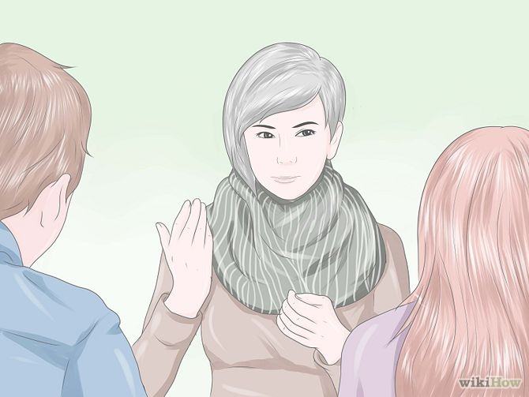Avoid dramatic scenes if possible.Direct yourself in a calm and collected manner. If possible, have a serious talk with the bride and groom beforehand.
- 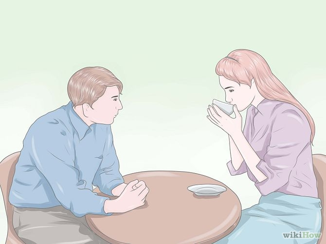Approach the bride or groom several days or even weeks before the wedding.You want to make sure you give the bride and groom time to think over what you have said and still have time to call off the wedding. In addition, weddings are expensive, and the earlier a doomed wedding is called off, the better.
- 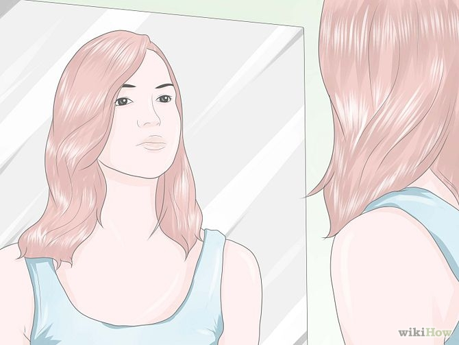Organize your thoughts clearlyThink about all the reasons why their wedding would be a mistake. Practice what you are planning to say in front of the mirror so that you will be as coherent and calm as possible.
- 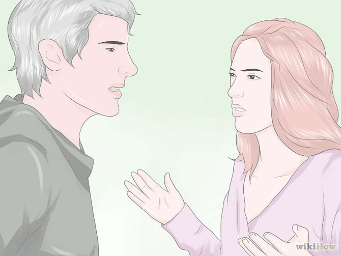 Lay out your reasons. If you want to be with the bride or groom yourself, tell the person you were involved with that you love them. Make sure that your expectations are clear, and since things obviously didn't work out for the two of you the last time you were together, what you are going to do to fix the problems you had before. If your reasons are non-romantic, tell them why you think it would be a mistake for them to get married to their intended. Try to address the question from their perspective, particularly if they vehemently disagree; after all, it's their wedding, not yours.
- 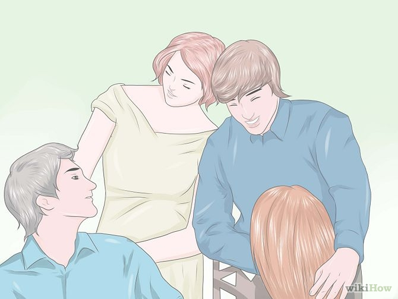Be graceful. Listen to what they have to say in reply to that. Recognize a lost cause when you see one. If you can see that the couple is truly happy, go your own way and wish them well.
Method 2 of 2: At the Wedding
- 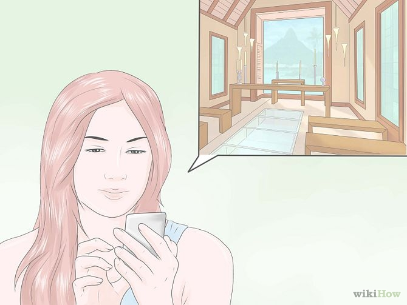Be very cautious about "crashing" a wedding. If you were not able to contact the bride or groom beforehand, and you are sure that you want to proceed, find out the location of the wedding. Unless you have been invited, you will have to find out where the wedding ceremony is to be held, and the exact time. Ask family members or mutual friends if it doesn't appear too suspicious, or perhaps check the wedding notices in the local newspaper.
- 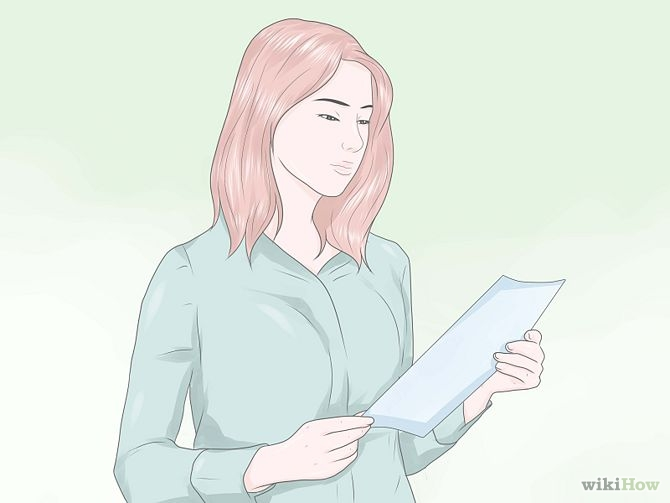Prepare your speech. If you're going to put a stop to something that has taken months to prepare and probably even longer to agree to, what you have to say needs to be incredibly compelling. Writing out a speech, rehearsing it, and learning it by heart are absolute necessities to overcome nerves and to project it from the heart.
- Build an effective case.
- Keep it brief but powerful.
- Give reasons why the person you love is marrying the wrong person (and, if your reasoning stems from this, why it should be you instead).
- Express your undying devotion to the bride or groom (if you're breaking up the marriage for romantic reasons).
- 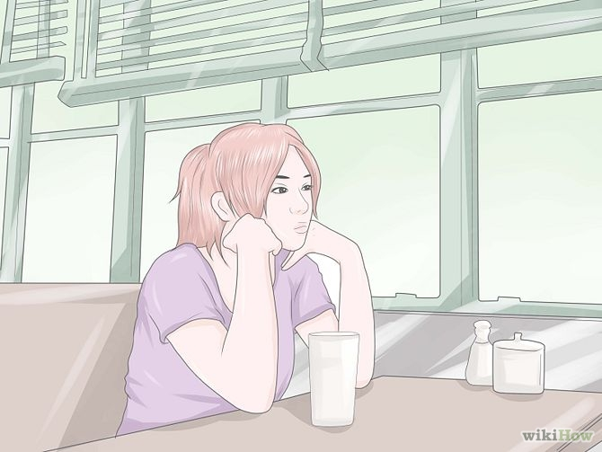Find a suitable place to wait. Do not allow yourself to be seated by the ushers. This increases the odds that you may be stuck in a bad part of the audience that will make it difficult for you to make your objection. If you have to, wait until everyone has been seated and the wedding is underway before you enter the foyer of the building.If the wedding is outdoors, keep a good distance until the bride has walked the aisle.
- 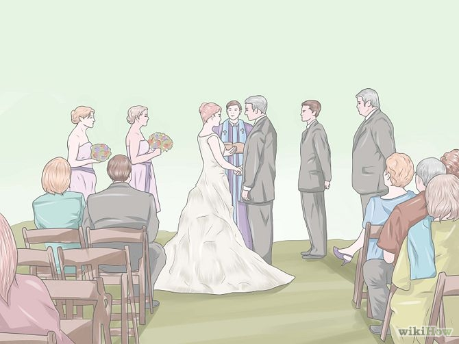Be in position when the ceremony begins. The best spot is at the back door of the church or room in which the ceremony is taking place. If the wedding is outdoors, move to the back of the aisle or seating area.
- 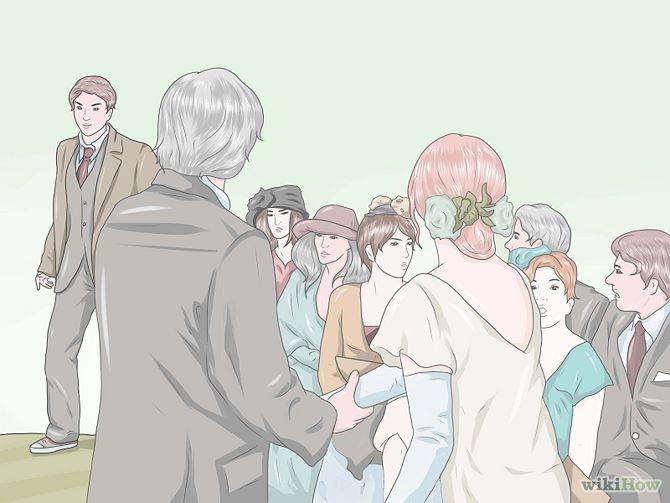Object. When the reverend, marriage celebrant, or judge asks if anyone should object to the marriage, step forward between the first few rows of seats in the back of the room. Boldly but smoothly raise your hand and say, "I object." At this point you must immediately provide a reason why your the groom/bride must not marry the other person. This is where your well-rehearsed speech will ensure that you sound convincing and will help prevent you from coming across as weak, crazy, or insecure. Some weddings no longer include this phrase. Unless you are sure this wedding does it might simply be better to talk to your love ahead of time.
- 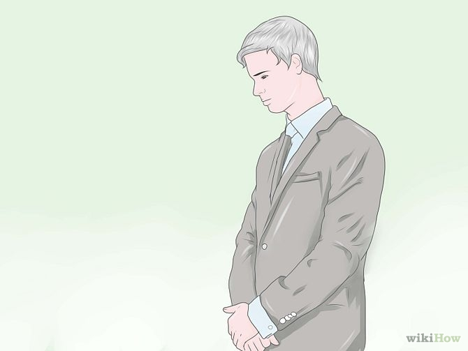Wait. The bride or groom will have only a few seconds to make a decision and everyone this person knows will be hanging on his or her answer. If he or she objects, quietly exit the room and walk away without making a scene. Don't be surprised if things do not go as you hoped; this is a very left-field, highly emotionally charged act. Instead, be gracious, nod politely, and apologize.
- Exit the wedding without making a fuss. You've probably already caused enough emotional trauma for the guests present (which is why it is exceedingly important to always think long and hard before going through with this).
- Have a taxi waiting, or your car, ready to make a fast exit.
- If you need to speak with your beloved, wait until after the honeymoon and send an email or text asking to meet up.
- 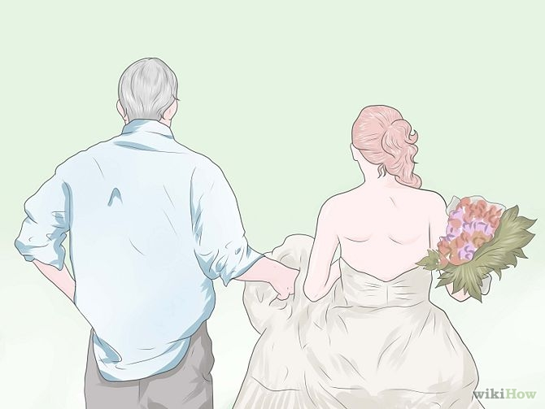Take charge if things go your way. If he or she decides not to go through with the wedding, it is your duty to immediately escort the bride/groom away from the pressure of their family and friends. There is no doubt that friends and family will be angry or furious and will demand answers if the bride or groom doesn't immediately flee the scene. Have a get-away car prepared so that the bride or groom doesn't have to face the embarrassment of his or her friends and family.
- 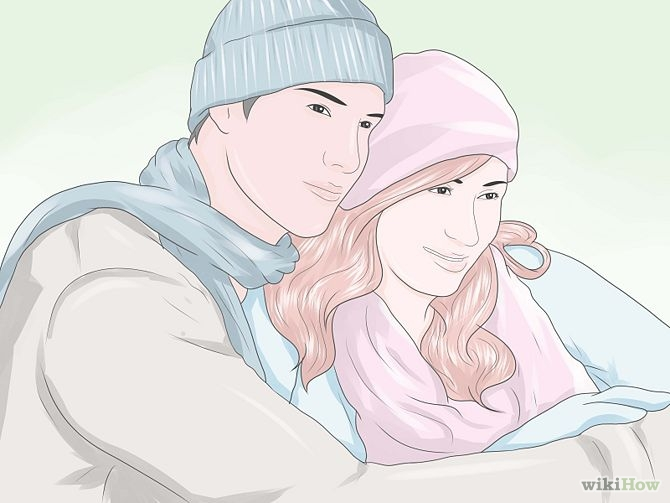Move forward in the aftermath. If your reasons were non-romantic, be a supportive friend to the bride or groom as they heal from this separation; even if it was their decision not to wed, it's still an emotional time and they will need support. If your reasons were romantic and you've won the heart of your beloved, enjoy life with your new partner. Be aware, however, that you're never guaranteed a storybook ending. Someone who is likely to walk from a wedding may be afraid of commitment, and insecure in relationships. This could pose problems for your relationship.
Tips
- Be prepared to cover the expenses of the wedding if you get your heart's desire. It's only fair recompense and you may be legally responsible for these expenses if you succeed.
- Only do this if you think it is for the other person's very best interests, whether or not they have a relationship with you afterwards.
- Try to talk with the family and make them understand why the wedding should be stopped. If this will not work, talk with a closer friend about what you can do for them.
- Write out what you plan to say as an objection to the wedding. This way if you freeze when everyone is wondering why you are interrupting the ceremony, you can refer to your written declaration of love and minimize the risk of drawing a blank.
Warnings
- Objecting to a marriage is risky and your odds of pulling it off are slim at best.
- Your 'beloved' may hate you.
- You should try your best to work out any potential issues with your "beloved" before the day of the wedding. If you can't talk to the person and air your concerns, you should take that as a sign that breaking up the wedding is not the correct course of action.
- If you really respect and care about this person, talk to him/her ahead of time in private. Speaking up for the first time at the wedding in front of a crowd of people can be a very hurtful, impolite way to handle the situation.
- In attempting to steal a soon-to-be spouse away, you will face the anger of their family and friends. If you attempt to break up a wedding, you may well ensure continuing hatred from your "beloved" and everybody else involved.
- In many weddings in this day and age the officiant does not ask if anyone objects.
- Seek psychological counsel. What you are suggesting is rare, not normal, and will cause life-changing memories for everyone in the room. You may also want legal counsel -- if you make any negative remarks about another person, you're likely to be sued for slander.
- Unless you want to face immediate repercussions or you're dealing with a very understanding family, it might be a good idea to move to a different part of the country afterward. You should have a job and place to live in mind before you depart.